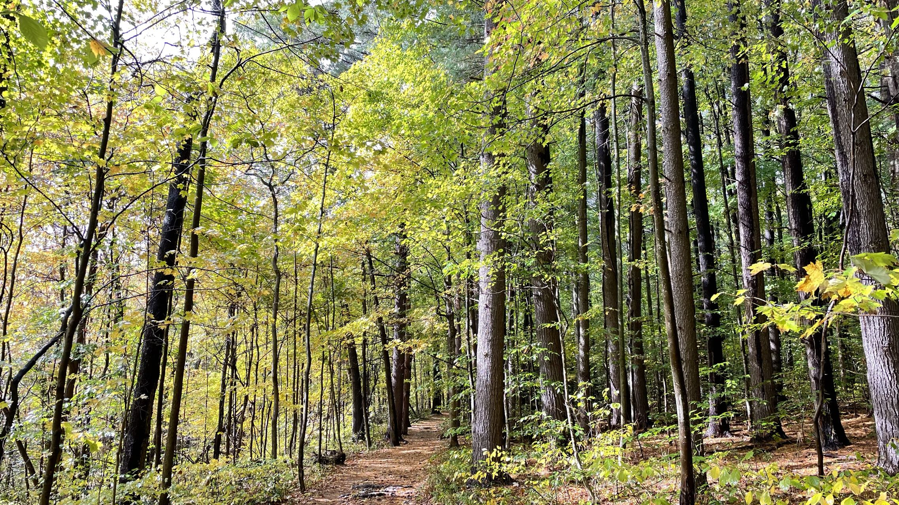
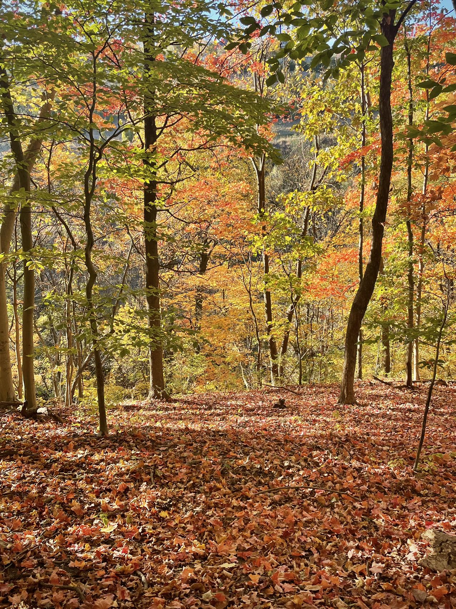

在湾区日思夜想的森林，在匹兹堡唾手可得
我在湾区日思夜想的森林，在匹兹堡唾手可得。开学第一周在竭力倒时差。现在入睡时间还不稳定，一不留神就到12点。
但起床时间已奇迹般地拔升至6:40。早上出门呼到的第一口空气总是令人愉悦的。匹兹堡的早晨有独有的气味，大约于十点会消散殆尽。
我夏天在湾区早上就闻不到这种气味。我并不知晓这气味应归功于匹兹堡还是秋天。总之，我每天早上第一件事一定是出门。
呼吸早晨令人愉悦的空气之于我就如同咖啡之于不少人一样，被编入了每日唤起程序。
我认为我应尽量减少工作日到校次数。工作日学校及学校周边都是聒噪的。我会感到我保护的东西被入侵。
自从我更清晰地把自己定位成“创作者”以来，维护“度假者心态”不再是一个丝滑切入常规学期工作模式的过渡技巧。或许长久维持它可以成为一个目标。
我听到的那句来自某种邪恶音源的“你天天都没有工作多少”的质问已减弱了许多。至少基于这一周看是这样。这一进步和关于创作者的自我定位密不可分。
努力生活 = 努力创作，它们皆对工作起到推进作用。至于周末，我却可以去学校了。周末的学校明显可爱很多，尤其赶上天气好的时候。
周六下午我去Scaife Hall工作。新建好的教学楼刚好可供我explore一番。我的心境不亚于夏天在University of Santa Clara。
啊，我认为这周是一个极好的开端，我达成了刚从优胜美地回来时立的小目标：将“度假者心态”留存一段时间，保有开关某种receiver的能力。
我现在是否还持续保有开关receiver的能力呢？这周没有遇到合适的契机来检验它，因为我没有看电影，也没有写诗。不过我确实有从微小事物中获得平静，
这说明至少一类receiver依然在健康地运行。这类receiver于近一周感知到了中秋夜草丛中的虫鸣，墙根的夕颜，晨雾笼罩的山体，枫叶映衬天空的轮廓，
还有夜晚打烊餐厅残留的灯火照亮墙上挂的画，瓶中的花。

两年前我也是这样不知疲倦地走在巷子里赏秋
—— 带着一肚子无望，和把美好的秋当作浮木的侥幸
同样一个秋日爽朗晴天开完会的下午，我又来Lawrenceville了。
这让我一下子穿越回两年前那个金秋：绚烂虽被我赏尽，却是迫于别无他择而赏尽的。
今天清晨还是薄雾清凛，正午已太阳高挂，寒气被一扫而空，如同夏天从来就没有离去一般。
天空中一团团不愿为高远的蓝色清场的云提醒着我秋天已至 —— 我认为这景象是秋天特有的，夏天或其他季节的白云衬蓝天之景并不会有很强的景深。
它就像白色毛绒玩具躺在蓝色床单上，两者直接接触。而秋天特有的白云衬蓝天是像有精心舞美设计的舞台 —— 蓝天是离观众最远的那层幕布，白云是前后交错放置的道具。
整体给人的立体感，跟玩具放在床单上的差距，就跟看平面相片与真实舞台的差距这般悬殊。
我本身就喜欢看斑驳的树影，因为影子是光的立体感的具身化呈现。如今叶片的颜色渐变再度加剧了这种立体感。
叶片或金黄或棕红的边框格外出色地拉长了光束穿过枝桠这段旅程的纵深，并赋予光滋味。
等光束打到仰头90度角观望的我的眼睛里，已经从轻盈的冷萃茶变成了用多种食材和香料精心调和过的浓汤。我大口品鲜。
斑驳的树影，高远的天空，更重要的是那温暖得依旧会在我的脸上照出红晕，却已不再令人燥热的阳光，无一不让我屡次想起两年前我也是这样不知疲倦地走在巷子里赏秋
—— 带着一肚子无望，和把美好的秋当作浮木的侥幸。当时我是如何一摊碎渣啊。任何一丝秋风不经意间传递的凉意，都会瞬时将我好不容易搭建起的平和击垮。
我的注意力会被立即拽回身上的不适，以及更可怕的，对未来深深的忧虑：我不知道我还能带着这般不适走多久，明天会对我好一点，还是会对我变本加厉？
我的忧愁一定加剧了那一年秋风对树叶生命颜色的剥夺。至少在我的印象中是如此：十一月将至便是一片死气沉沉。这死气沉沉形容的既是周遭，也是内心如枯叶的我。
不过反观，那一年的秋给我提供了一整个十月的浮木，已算得上是仁至义尽了。
今天发生的一切都让我感叹实在是太像2022年了。除了景色与街巷的氛围，另一重要元素是和导师开会。又是一个从某个无端想法展开，毫无组织结构的会。
以往，我一定会为我迟迟未产生靠谱的主意而倍感心焦，尤其是在Yonatan排布一系列天马行空的想法，以致于我跟上他的思绪太吃力的时候。
我想若换做当时的我，下午的出行将会全程在我空虚又急迫地寻求浮木中展开，然后以黄昏徐徐推进，我稀薄的温热最终投降于渐凉的空气而告终 —— 又是因绝望而看什么都能看出枯萎的一天。
是呀，以我那样的身体状态，怎能奢望鲜活得以留存呢？
曾经的愁眉苦脸历历在目，而我总归是向前走了。是的，我始终在向前走，在身体亏损之前是选择向前走，在身体亏损之中是别无他择向前走。
现在介于两者之间。其实在身体亏损之中，并非没有alternatives，只是经过我的评估，这些alternatives或多或少和当时“主路”的境况equally hard。
我并不是一条愣头青，不知退让或取舍。在当时我面临的取舍中，能取的和必须舍的几乎有同等份量。于是“保持当前道路行驶”似乎是最优项，
甚至它还帮我减免了会耽误在比较和评估其他路径上的无谓消耗。
而说现在和两年前似像又非像的重点原因，是我不再如当时那般容易应激了。
单就学术事业这一方面来谈，我积累了许多思考和素材，以致于它们不再会被轻易动摇了。
外来思想要么与我无关，要么被转换成对我的服务或推动。每一次接触外来思想，我都能接收到两种信号：
1. 它在给我传递有关我能力不足的通知/预警；2. 它在给我传递一个机会。
两种信号过去和现在都在持续产生，但过去的我确实认为我自己能力不足，因此会给第一种信号加一层强化，导致我崩溃频发，
旧伤未愈，新伤叠加。现在，虽然这些信号依旧以它们的原始形态存在并萦绕在我周围，但当我减少interpreting everything as an indication of my incompetence，
平和便能如涓涓细流滋润我稍许。在平和如此匮乏的我的生活里，滴水之恩当涌泉相报。
此时我又陷入了对秋色的无限遐想。那几个景点意象，无论怎么排列组合创造的美都看不厌。镶了金边的叶片，旷远的天空，暖而不燥的阳光，
藏匿在秋风中若隐若现的寒意，都在告诉我：Things are able to get ready quicker than you think. So are you.


我很怕一个意象，乃“噪”
倘若我喜欢森林，我就应该在任何季节都喜欢它，不是吗？可为什么到了冬天我就不喜欢了呢？
难道说我喜欢的其实是光，森林是我偏爱的欣赏光的媒介？而匹兹堡的冬天没有光，这正是问题的核心：
没有光时，无论我靠近哪种欣赏光的媒介，定然都是无用的。我想这一解释有一定道理。光秃秃的枝丫并不是导致我厌恶冬日森林的根本原因。
想象一番Golden Hour光的射线让所有树干和枝丫的同一侧被点亮 —— 必定会引得我十分欢喜。
雪后的森林是另一个例子。有了雪地的反光，我将不再需要日光的增色。
我可以清晰地在脑中构建最令我难过的，“忧郁之冬”的典型图景：灰色调的天空如定音鼓一般一下子掌控了万物的基调 ——
是无论如何都逃不开Gloomy了。当然，我很想拥有能力破除这该死的定音鼓过度的强势。这很适合单开一个课题来思考它。
说回典型图景，灰色天空之下本不独自可爱的事物现在变得“可憎”了。例如混合着枯枝烂叶和泥土的地面，没有任何优秀的texture，没有颜色，没有生气，
也没有能力作为背景板反衬出任何事物的任何积极的品质。我忽然意识到我讨厌的图景跟我讨厌的人有着一模一样的特质：不仅无用，而且添乱，不仅枯燥，
而且还阻碍我的注意力去往不枯燥的地方。啊这是多么悲哀的一种存在！我感到此刻我心中的Hate冲到了峰值 ——
那是过去三个严冬我尚未安放妥当的怨声载道，无可奈何的长叹，滋生的浓稠的恨。如今我意识到这恨的对象不是什么具体事物，而是一类抽象的品质。
具有上述特质的事物皆令我唯恐避之不及。我想这等浓稠的恨必定关联到我的一个vulnerability，否则我并不会产生如此强烈的情绪。
这个vulnerability来自我对失去平静的恐惧。我很怕一个意象（我用”意象“这个词是因为我暂时还想不出什么其他更恰当的名词），乃“噪”。或许“躁”也同样适用。
它在我脑中的形象就是民间恶鬼传说中丑陋恶鬼的形象。它像土匪一般掠夺我的土地，我的平静之地。而每当这土匪来劫掠时，我的确如同手无寸铁的平民百姓面对侵略者时的境况一样束手无策。
而我这种任人宰割的状态产生的无力感，又持续喂养着我心中对土匪的恨。于是这恨囊括两个层面：原始的，对掠夺者的恨；以及对毫无招架之力的自己的无可奈何。
至于这第二层是如何产生的，我有必要进行下一步思考。显然我体会到了一个期待：期待自己应该有抵抗力，甚至应该有预判土匪入侵并施加防御措施的能力。
然后，一旦我感受到这层期待，我必然会进行反驳：我时至今日依旧遭到入侵，不是因为我没有抵抗/预判/防御力，而是土匪的综合实力总是领先于我的现有实力。
当然这也不代表我进步缓慢或低效，而是因为我身处的空间就是一个遍布高难度土匪的空间。
我与人沟通时常见的一个模式，是我反复强调我遇到的困境的难度。因为我不愿听到浮于表面的建议，那些建议仿佛在把我当成一个不会应变，不会从经验中学习的傻瓜。
啊！甚至可以说，给我这些建议的人，本身就是“噪”的一员！
我似乎得到了一个不得了的领悟：告诉我如何打土匪的人当中，有不少本来就是土匪。啊！！土匪的面目可憎忽然在我脑中挥之不去。
有多少时刻，我在感受着“噪”的期待，关于我该如何抵抗和防御“噪”期待。而我接受了这种期待进入我的身体，尽管它完全不了解实际情况。
我要为自己锻造两样武器：1. 一双能更快速辨认是人是妖的火眼金睛，2. 一个驱妖的习俗。
第一样武器的功用和重要性不言自明。我只需强调一个重点：“噪”可以附着在任何人身上。即便一个人以往是好人，或大部分时间是好人，当TA被“噪”附着，即可成妖。
这一变化可逆。当TA做妖的这段时间，若我与之接触，我也需迅速将TA辨认为妖。这也许是我当下的薄弱之处。我想到了过去很多时刻，我其实遇上了妖，但却没有辨认出来，
导致我不明白是什么忽然让我不适。又或是我辨认出了曾经的好人目前有妖附着，却不愿相信自己的辨认结果，因为我担心一旦自己心中为某人打上了妖的标签，TA就不会变回好人了。
总之，人与妖之间的流动性带来的启示：一日为妖，不代表终生为妖。我应当允许所有人在某些时日成妖，因为我自己也肯定在某些时日成为别人眼中的妖。
第二步，驱妖习俗。我想到这点原是由自一个可爱的类比。农历春节放爆竹贴窗花等习俗，是为了吓跑一个名为“年”的兽。那么我也要拥有习俗，来吓跑我讨厌的名为“噪”的妖。
民间神话中，年兽有三怕：巨响，红色和火光。那么噪妖怕什么呢？
第一怕必定是“止语”。我联想到了佛教中的闭口禅。当然我并不想真的修闭口禅，那样我干脆入佛门，还在这书写古灵精怪的思绪做啥。
我对止语的期待含义是：不主动initiate交谈。我想这应当是可以实现的！假若我只能回复他人的话，但不能主动发起对话or不能主动发起非必要的“日常闲聊”，我想这很合理！！
日常闲聊是噪妖最爱的食物。止语相当于断了它的粮呐。


看了太多场演出后，我已经乏到不想再靠近剧院了
我在Cuyahoga证实了两个之前就隐约想过的点。
第一，真正的休息，往往需要一个平缓滑入的过程。这一前奏不易察觉，
甚至会给人一种“我计划中应得到的休息没有如约而至”的沮丧（若某次休息是被计划过的话）。
所以，这一方面说明了假若我认为我做出了休息的行为却没有得到休息的结果，那么我应该继续这些行为。前奏不仅仅是它的渐入不易察觉，它的结束也是不易察觉的。
更进一步，这又加固了“休息时长应该持续多天”这一想法。因为要预留出时间让一切平滑过渡。
对我而言，至少需3-4天。
昨天，也就是我来Akron的第一天，我数次有一种“本次休息看样子不会顺利展开”的担忧：
作息没调到适合hiking的状态，甚至“欠了债”，在我出发的两天前还刚刚经历暴食的disaster，所以饮食这方面也欠了债，
更惨的是下雨，我不知道雨对hiking的阻碍究竟多大。
但快乐的事情是我现在可以承认前奏确实持续了一阵，并开始向正式章节过度了。
对前奏所需时长的更准确的估算推动着我思考我的一些周末放松计划究竟是否可行。显然周末两天是不允许前奏和正式章节一并塞入的。
那么只保留前奏的“休息”和整套休息相比缺失了什么？是缺失了核心内容，还是基本要素齐全只是程度很浅？我愿相信是后者。
不过即使是前者，我依然还有另一条路径值得推进：降低我load的增长速率。昨天和今天森林对我的帮助是，它让一个领悟清晰浮现 —— 造成我load快速上涨的
不是代码与实验（即我的主业），而是“paper hunting”。以往我总是会用“然而我的众多智慧升级时刻都离不开我读了很多东西这一事实”来反驳“我应该降低阅读量”这种念头。
从现在起我直视这个念头了。我确实可以把“减少（甚至屏蔽）信息摄入”，尤指科研方面的信息，纳入夺回内心平静的可行途径中。
不得不说无论paper还是talk，或是twitter/webpage/blog，都有一种表演性。表演性让我在阅读中额外多了一层信息加工的程序：即脱掉纯粹为表演的目的而存在的外壳，
还原一段信息在非表演状态下的本真面貌。正是这一层额外负荷给我增加巨大的消耗。
在我还未想出如何用更少的消耗来脱去表演性外衣前，想必直截降低新信息的摄入不失为一个好办法 —— 看了太多场演出后，我已经乏到不想再靠近剧院了。
无论海报，预告片如何更迭亮眼，在我不想看演出的时日，我都不必靠近剧院。
第二点，看似重复度很高的hiking日程 —— 同一个公园，水土植被似乎高度相似 —— 实则细微的差别足够满足我对新鲜的需求。
我在圣塔克鲁兹有过类似的担心，但当时我尽可能让三天的自然景观有所差异：红杉林，林中佛寺，花田 + 牧牛山坡。
此次Cuyahoga之行可以说景观重叠的风险更高。秋色山林，小溪瀑布，也不过就这些了。然而当我缩小对“景观差别”的定义的尺度，森林独特的千姿百态忽然就不请自来。
今天走过一片针叶林，我顿时意识到这是昨天没见过的。踩在堆了厚厚一层松针的地上，我又回顾了那个想法：我觉得我生来不是一朵花也不是一个什么甜美可爱的东西。
正如我的名字或许会暗示的那样 —— 我生来更像一棵树。
当然，地势起伏的山谷，湍急的水流，也是昨天不曾见到的。而它们，连并针叶林一起，都是冬天的森林依旧保有的东西。
我总是在积累要对冬天的森林依然向往的理由。或许我本身是会爱上它的，只是某些清障工作不到位使得我爱上它的路注定蜿蜒。
我觉得我以后但凡阅读必须后接一个forest walk来消化我新摄入的信息。这样或许我将不再对阅读又怕又无法resist the urge to read。
一个地处偏远但又得体seating的咖啡厅想必也是编入这一routine的重要一环。
我过去面临的阅读困境是一种可以被抽象为「内容物 > 容器」的困境。溢出的内容会无所适从地徘徊，与其他内容干涉。
本身我脑中的信息是分区承载的，如同桌上分盘装的食物。可当它们开始溢出，酱汁在桌面上混成一团，焦躁的我此时只能不加分检地将它们吃下。
这便是我难受的核心来源。原来，信息在我脑中，也需要持续被维护的边界感。
我想，若我把摄取信息当作看演出，那么在我走出上一场演出的余味之前，我应当拒绝走近剧院。
我的餐桌不必再承受着食物风味被迫混合的代价接受一盘新来的菜肴。
一切听不见落叶触地的声音的地方，对我来说都是聒噪的。
但我此行意识到了一个重要的distinction：比起讨厌人，我更讨厌噪。似乎噪才是我厌恶的核心。当人一旦成群，必生聒噪。这一逻辑显示了人与噪之间的强关联，
但这一关联显然有不成立的时候 —— 当人没有成群，或当人成群我却听不到他们的声音时，人就不一定生噪。
我意识到People watching有潜力成为我的一个常规消遣。这表面上与我远离人群的偏好冲突，实则恰恰证实了：是“噪”，而非“人”，让我生厌。
我在森林里见到各种各样的人，皆不令人讨厌：装备精良的人，行走在自己的泡泡里的人，讲着法语似乎在商量某种策略的人，
心情阴郁用跑步发泄的人，对行山习以为常不紧不慢的人。。。有人在意行进的速度，时间的流逝，有人不在意。
关键有一点：一切通过语言的信息交互都是有效的。那些不需要信息交互的人，在森林里便不说话。或者说，那些不需要用语言，或者同他人，进行信息交互的人，在森林里便不说话。
他们也许in fact正在进行着大量高效的信息交互 —— 这类信息交互，可以以任意自然意象或想象出的意象为对象，在森林中频繁地，非聒噪地进行。




曾经我是如此渴求一个声音能牵着我走一段路
秋假果然帮我restore了一部分“度假者心态”！这一周至少前半段天气保持无可挑剔地晴朗，
使我时刻都思索着去什么地方看看树，看看街道，看看小店或者教堂。
十月中下旬果然是匹兹堡的秋色鼎盛时期。我想吸尽秋阳。此时秋阳能给予我的能量不亚于暑假的加利福尼亚😃。
我开始光顾或计划光顾两年前的那个金秋曾踏足的地方：
Fifth Ave上的majestic tree；Regent Sq “the magnificent street corner”；Frick park砖砌的正门；Pino's restaurant 。。。
我知道现在的心境已变换许多。对于“同一环境不同心境将产生何种不同体验”的好奇驱使着我大量故地重游。
当然，我的确思索出赏秋的不少新花样。早起是最重要的元素之一。每日于拂晓出门，在咖啡的香气中看着天色一点一点地明亮，
我喜欢这种寂静时分我的思想却已然经历完它一天中最活跃的黄金期的“优越感”。
今天我确定了“噪妖”的第二怕 —— 无字歌。入秋以来，我播放纯音乐的比例明显增加，
我开始减化入耳的人声，如同我修剪我的信息摄入、以及边境管控我尤其重视的那个空间一样。
清晨的通勤时间是吸嗅晨雾的时间，同时用来拉长我的听觉，将它延伸至枝叶深处的鸟鸣。
这同样也是无字歌啊！为了对付噪妖，我要花一些心思来扩展我的无字歌单。
我好可怜两年前的自己，无时无刻不在惯性地戴上耳机 —— 并不全是因为周遭环境嘈杂，
而是因为我是如此渴求一个声音能牵着我走一段路，哪怕仅仅是从当前路口到下一个街角。。。想来也是呀，
我必须把我的思绪安扎在我身体之外的异乡，才能暂时凝固住我身体内汩汩流淌的忧伤。
若赠予与归还的巨轮着实在年复一年地滚动，那么将降临于我的各式崭新的东西，
想必会踏着令它们舒适的节拍，有序前来吧。
You walk ... crawl ... blunder through it
我想我过去两年经历的“松弛感”大约是低于均值两个标准差吧。我现在做的各种寻求松弛的举动，
表面上看似乎彰显着我是一个多么松弛的人。
然而不为人知的事实是，我此举恰恰诉说着我的生活里松弛是多么匮乏。我的目标从来就不是做个什么以松弛感著称的人。
我只希望将自己从距均值两个标准差的糟糕境地，往均值移一移。仅有这点小小的希望。
今年的秋我无时无刻不在对比中度过。仅仅是感受这种对比都会让我哭泣，随之而来的是感激。
我在不知不觉中爬过了一个泥沼。并且我有一个隐约的感受是：我也已经迈过这个泥沼的边缘。此刻我脚下除了坚硬一些的泥之外，应该还有更坚硬的陆地。
不像从前，脚下是会使人陷落的泥泞，再往下是漆黑笼罩的虚空。我不晓得我是怎么爬过来的。
今天看到同学在群里问关于背痛要做核磁检查的相关事宜，我顿感低落。
这低落的源头，不止是为她担心，也不止是为自己伤心，还有一种对自己某种“无知”的不适。
若有低年级的同学问我如何边应付背痛边念PhD，我没有办法提供建议。
或者说，若需要我给出一个smart answer，我只得承认我的无知。但我确有一个blunt answer，那就是move forward。
这是我去年hiking时俘获的智慧：当你不知道往哪儿走的时候就往前走。
当然我觉得我的这番坦白对一个尚未抽身泥沼，或更准确来说，一个将将踏入泥沼还在试图理解自己处于何种境地的人，
是尖刻且苦涩的，令人拒绝相信。
电影“泳者之心”里，黛比曾面临一片布满蛰人水母的海域。她问船上的教练应对方案是什么，教练答：没有方案，you swim through it。
这便是我所指的“无知”。我至今不知穿过泥沼的方案。
You walk ... crawl ... blunder through it.
我十分理解身处泥沼中的人几乎无法采取他人的任何建议。因为那些能说出口的建议，
哪一条不是那泥沼中的人屡次三番地想过并试过的？这大部分都是不能因地制宜的空壳建议。
就拿我信息过载这一困扰来举例。我固然知道我应屏蔽信息。可这样做会滋生担忧。担忧频频outweigh我承受信息过载时的痛苦，
于是我别无他择。从苦涩的结果来看，我是无何奈何的。
可置身我的处境一观便能察觉我其实一直在做最优的选择，只是在我的自信增长到能outweigh FOMO之前，我必然承受FOMO或信息过载两者之一。
现下我的自信逼近了能outweigh FOMO的地步，不过我还能看到一段不短的进步空间 —— 当前Twitter对我来说依旧是噪。
我羡慕Yonatan日常从twitter中掘取好物分发给我们，却不受其噪的扰乱。
今天我领悟了，正如我现在能从ins中掘取“匹兹堡Hidden Gems”却不觉得噪一样，将来我也一定能达到让Twitter尊循同种逻辑为我服务的境地。
虽然我看不清通往彼地的路，可我也不是第一次这样“无知”了。至少，我知道there is a blunt answer，且它过去未让我失望。

